01 · Problem
Most player controls compete with the film
Default players stack a dark gradient, a full-width bar and a row of icons over the bottom of the frame. On calm, cinematic footage that strip becomes the loudest thing on screen, and on a phone it can cover a third of the picture.
- Visual noise. Heavy bars and gradients hide part of the frame, even while nobody is touching them.
- Hidden structure. Chapters are either missing or crammed into the timeline as labels.
- Guesswork. Hover and playhead often look the same, so seeking feels uncertain.
- One size for all. The bar is always in the same place, even when it covers subtitles or a face.
02 · Concept
One quiet surface, three sizes
Atelier treats the controls as a single piece of glass that changes size with your intent. The video stays the hero; the interface appears when you reach for it.
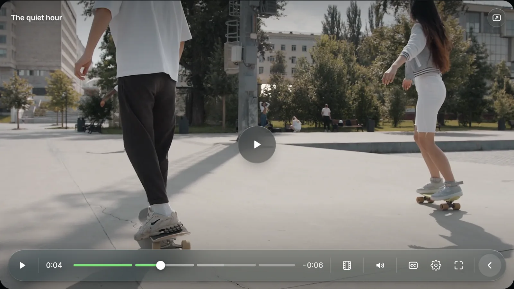
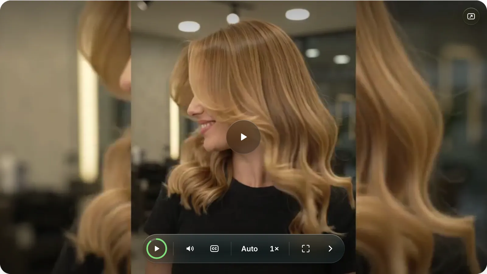
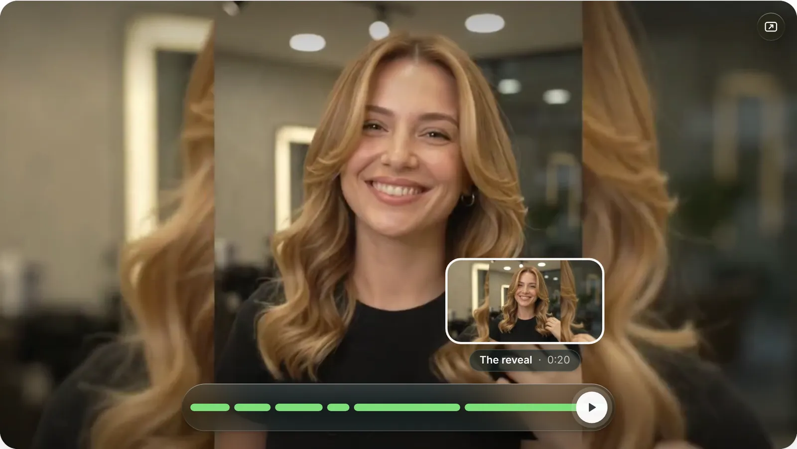
03 · Design decisions
Why it works the way it does
A blurred, tinted capsule keeps controls legible over bright and dark scenes without darkening the whole bottom of the frame.
The full bar is for exploring; the pill is for watching. The change is one smooth morph, so people always know where controls went.
The timeline only shows where chapters begin and end. Names, thumbnails and a live progress rail sit in a popover, so the bar stays clean.
The playhead is a solid knob on a green fill. Hover is a framed thumbnail with a hairline pointing at the exact time, so the two never look alike.
Quality and Speed show their current value; one tap opens a focused list. Fewer choices on screen, the same power one step away.
If the bar covers subtitles or a face, drag it to the top (or press T). Popovers, previews and the title follow.
04 · Details
Small moments that make it feel finished
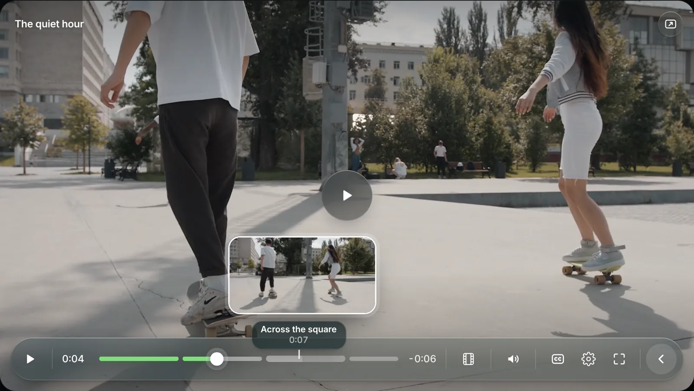
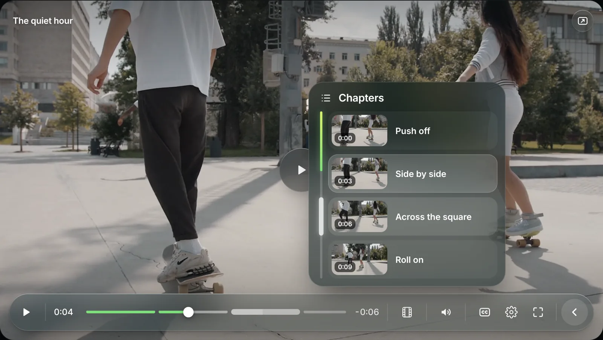
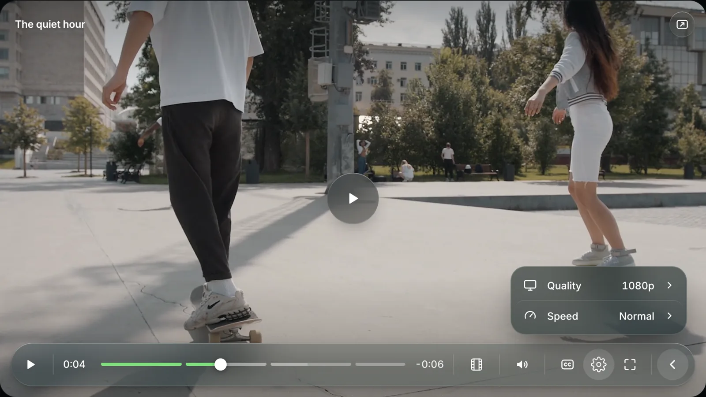
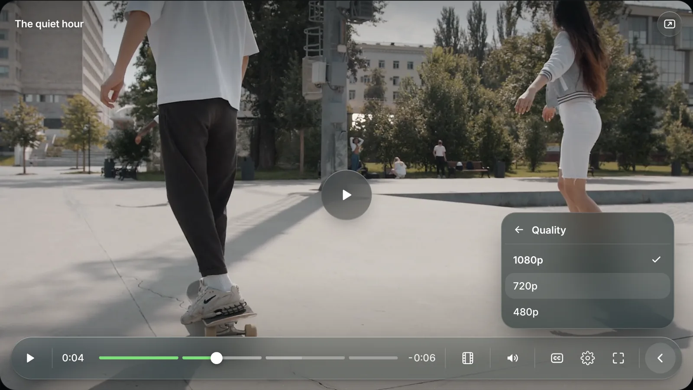
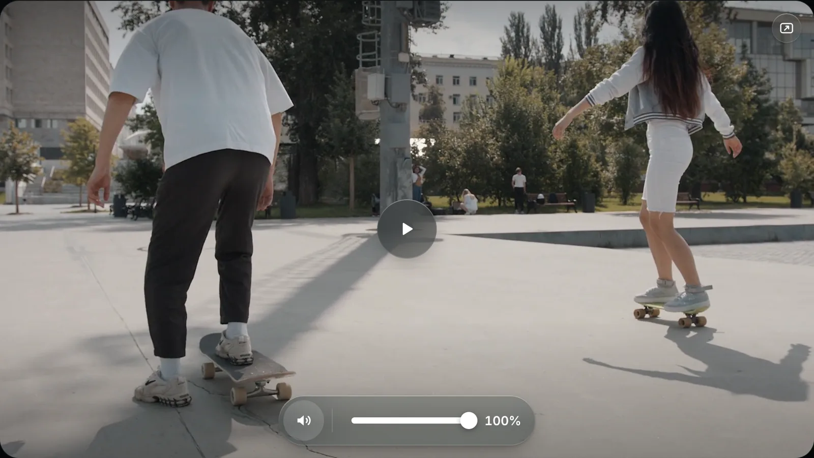
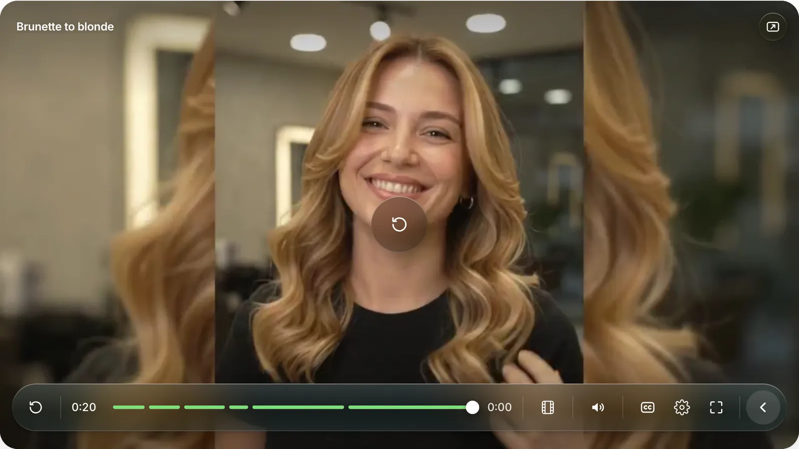
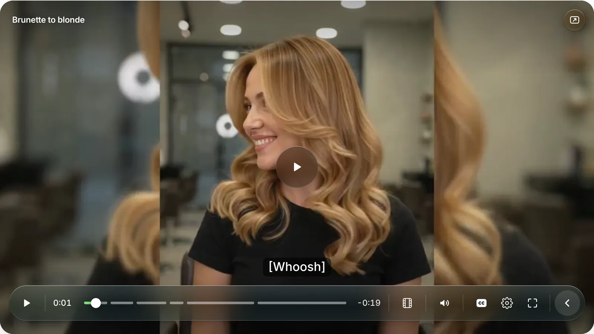
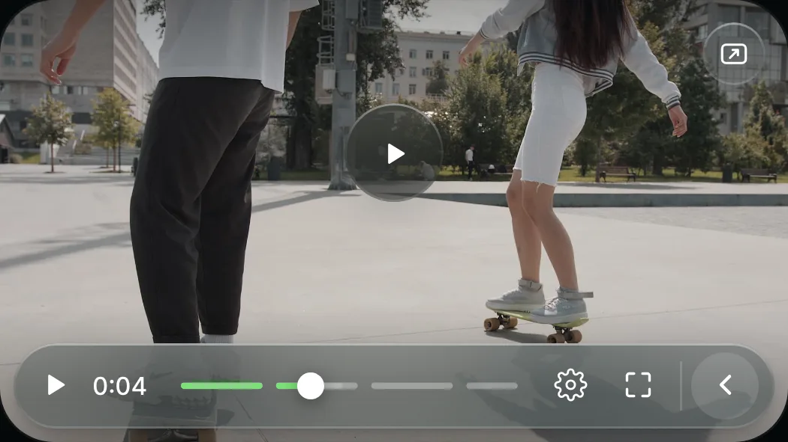
05 · Accessibility
Built for keyboard, touch and preferences
- Every icon button has an accessible name and a tooltip; menus use proper roles with a checked state.
- Focus stays visible and controls stay on screen while anything inside them has focus.
- Respects reduced motion and reduced transparency (glass turns solid).
- Hold-to-scrub and drag are extras: every action also has a button or a key.
Tested with keyboard and automated browser checks at desktop and phone widths. A full screen-reader audit has not been done yet, so no WCAG conformance is claimed.
06 · Visual system
A small set of rules, used everywhere
07 · Credits
Inspired by the calm, glass-like feel of Apple's media controls. Everything else is original to Atelier: the bar-to-pill morph, the progress ring, hold-to-scrub, the chapter panel with live progress and hover mapping, the drill-down settings and the movable bar.
Design and build by Angga Ady Ermawan, built on Video.js v10 with an AI coding assistant. Sample footage is used for the demo only.